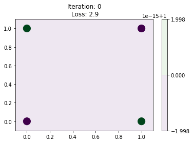
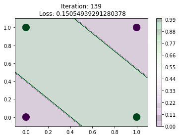

import autograd.numpy as np
import matplotlib.pyplot as plt
%matplotlib inline
np.numpy_boxes.ArrayBox.__repr__ = lambda self: str(self._value)X = np.array([[0, 0],
[0, 1],
[1, 0],
[1, 1]
])
y = np.array([[0], [1], [1], [0]])X.shape, y.shape((4, 2), (4, 1))N, N_0 = X.shape
N, N_2 = y.shape
N_1 = 2W = [np.array([0]), np.array([[1, 1], [1, 1]]), np.array([[1, -2]])]
b = [np.array([0]), np.array([[0], [-1]]), np.array([[0]])]
B = []A = [X]
A.extend([None]*(len(W)-1))
Z = [None]*(len(W))def relu(z):
temp = z.copy()
temp[temp<0] = 0
return temp
def sigmoid(z):
return 1./(1+np.exp(-z))for i in range(1, len(W)):
Z[i] = A[i-1]@(W[i].T) + b[i].T
A[i] =relu(Z[i])A[2]==yarray([[ True],
[ True],
[ True],
[ True]])Excellent, now let us start from random weight initialisations and use backprop to come to our result
shapes = [X.shape[1], 2, 1]
activations = ['empty','sigmoid','sigmoid']
activation_func = {'sigmoid':sigmoid, 'relu':relu}
W = [None]*(len(shapes))
b = [None]*(len(shapes))
np.random.seed(0)
# Dummy
W[0] = np.array([0])
b[0] = np.array([0])
for i in range(1, len(shapes)):
W[i] = np.random.randn(shapes[i], shapes[i-1])
b[i] = np.random.randn(shapes[i], 1)
Z = [None]*(len(W))
Z[0] = np.array([0])
A = [X]
A.extend([None]*(len(W)-1))def make_plot(iteration, loss, W, b, cmap='PRGn',close=True):
h = 100
xx, yy = np.meshgrid(np.linspace(-0.1, 1.1, h),
np.linspace(-0.1, 1.1, h))
XX = np.c_[xx.ravel(), yy.ravel()]
A = [XX]
A.extend([None]*(len(W)-1))
Z = [None]*(len(W))
for i in range(1, len(W)):
Z[i] = A[i-1]@(W[i].T) + b[i].T
A[i] =sigmoid(Z[i])
pred= A[2].reshape(xx.shape)
pred[pred>0.5] = 1
pred[pred<=0.5] = 0
contours = plt.contourf(xx, yy, pred, h , cmap=cmap, alpha=0.2)
plt.colorbar()
plt.title(f"Iteration: {iteration}\n Loss: {loss}")
plt.scatter(X[:, 0], X[:, 1], c= y.flatten(), cmap=cmap, s=200)
plt.savefig(f"/home/nipunbatra-pc/Desktop/xor/{iteration:04}.png")
if close:
plt.clf()make_plot(0, 2.9, W, b, close=False)
def objective(W, b):
for i in range(1, len(W)):
Z[i] = A[i-1]@(W[i].T) + b[i].T
A[i] = activation_func[activations[i]](Z[i])
y_hat = A[2]
loss = (-y.T@np.log(y_hat) - (1-y).T@np.log(1-y_hat)).squeeze()
return lossobjective(W, b)array(2.9991465)from autograd import elementwise_grad as egrad
from autograd import gradgrad_objective = grad(objective, argnum=[0, 1])(del_W0_auto, del_W1_auto, del_W2_auto), (del_b0_auto, del_b1_auto, del_b2_auto) = grad_objective(W, b)del_W2_autoarray([[0.60353799, 0.35399637]])del_W2_ours = (A[2]-y).T@A[1]del_W2_ours,del_W2_auto([[0.60353799 0.35399637]], array([[0.60353799, 0.35399637]]))del_b2_ours = (A[2]-y).sum(axis=0).reshape(-1, 1)del_b2_ours,del_b2_auto([[0.6632421]], array([[0.6632421]]))del_A1_ours = (A[2]-y)@W[2]
del_Z1_ours = np.multiply(del_A1_ours, sigmoid(Z[1])*(1-sigmoid(Z[1])))
del_W1_ours = del_Z1_ours.T@A[0]
np.allclose(del_W1_ours, del_W1_auto)Truedel_b1_ours = (del_Z1_ours.sum(axis=0)).reshape(-1, 1)
np.allclose(del_b1_ours, del_b1_auto)Trueepochs = 140
alpha =1
losses = np.zeros(epochs)
print_every = 20
W = [None]*(len(shapes))
b = [None]*(len(shapes))
np.random.seed(0)
# Dummy
W[0] = np.array([0])
b[0] = np.array([0])
for i in range(1, len(shapes)):
W[i] = np.random.randn(shapes[i], shapes[i-1])
b[i] = np.random.randn(shapes[i], 1)
Z = [None]*(len(W))
Z[0] = np.array([0])
A = [X]
A.extend([None]*(len(W)-1))
del_Z = [None]*(len(W)+1)
del_A = [None]*(len(W)+1)
del_W = [None]*(len(W))
del_b = [None]*(len(W))
for iteration in range(epochs):
for i in range(1, len(W)):
Z[i] = A[i-1]@(W[i].T) + b[i].T
A[i] = activation_func[activations[i]](Z[i])
y_hat = A[2]
loss = (-y.T@np.log(y_hat) - (1-y).T@np.log(1-y_hat)).squeeze()
losses[iteration] = loss
if iteration%print_every==0:
print(iteration, loss)
make_plot(iteration, loss, W, b, close=True)
del_A[2] = -np.multiply(y, A[2]) + np.multiply((1-y), (1-A[2]))
del_Z[2] = A[2]-y
del_W[2] = (A[2]-y).T@A[1]
del_b[2] = (del_Z[2].sum(axis=0)).reshape(-1, 1)
del_A[1] = del_Z[2]@W[2]
del_Z[1] = np.multiply(del_A[1], sigmoid(Z[1])*(1-sigmoid(Z[1])))
del_W[1] = del_Z[1].T@A[0]
del_b[1] = (del_Z[1].sum(axis=0)).reshape(-1, 1)
for i in range(1, len(shapes)):
W[i] = W[i] - alpha*del_W[i]
b[i] = b[i] - alpha*del_b[i]0 2.9991464995409807
20 2.850067543754094
40 2.5045921819726082
60 1.5756597251036364
80 0.5779054501565161
100 0.3097308274202594
120 0.2028529568023768<Figure size 432x288 with 0 Axes>make_plot(iteration, loss, W, b, close=False)
make_plot(0, 2.9, W, b, close=False)array([[0],
[1],
[1],
[0]])!convert -delay 20 -loop 0 /home/nipunbatra-pc/Desktop/xor/*.png xor-own.gif